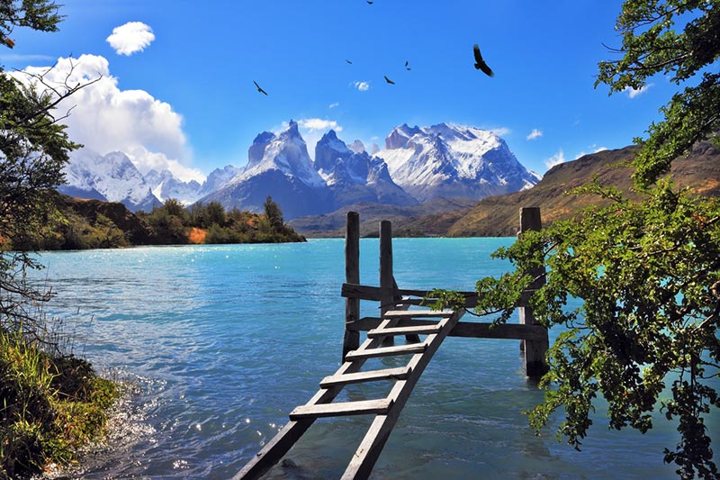

No extremo sul das Américas está um dos lugares mais selvagens do planeta. Uma paisagem quase intocada aguarda para ser descoberta e explorada. Essa é a sensação dos viajantes que chegam à Patagônia e ao Parque Torres del Paine: sentem-se os únicos habitantes de um universo repleto de montanhas, geleiras, lagos e campos. A desafiante imensidão natural deslumbra todo tipo de aventureiro.
Ao sul da Cordilheira dos Andes, dividida entre a Argentina e o Chile, a região Patagônica abrange um terço do território dos dois países. São quase 800 mil km² de paisagens impressionantes e riquíssima natureza. Um ambiente quase inabitado por homens, porém repleto de vida.
A porção sul da Patagônia contempla um dos melhores pontos para os turistas que desejam muita aventura, mas com pouco deslocamento. Entre a cidade de Puerto Natales e o Parque Nacional Torres del Paine, é possível realizar escalada, trekking, caiaque, caminhadas, observação de pássaros, cavalgadas, visita às geleiras, passeios na cidade e aos museus. Sem contar a excelente experiência gastronômica que a região oferece.
A paisagem radical, à primeira vista, pode parecer pouco convidativa aos que não estão acostumados com o turismo de aventura. Mas a Patagônia é tão diversificada que absorve todos os tipos de viajantes. Os passeios terão o grau de dificuldade que desejarem. O importante é ter em mente que qualquer um deles deixará lembranças para toda a vida.
Este guia é específico da região do Parque Nacional Torres del Paine. Por isso, pegue casaco, gorro e um tênis bem confortável. A caminhada será longa. Não esqueça a máquina fotográfica e aproveite cada segundo para registrar suas melhores lembranças.
Voltar para o inicio